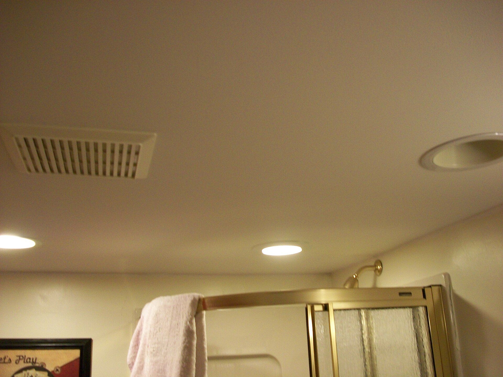
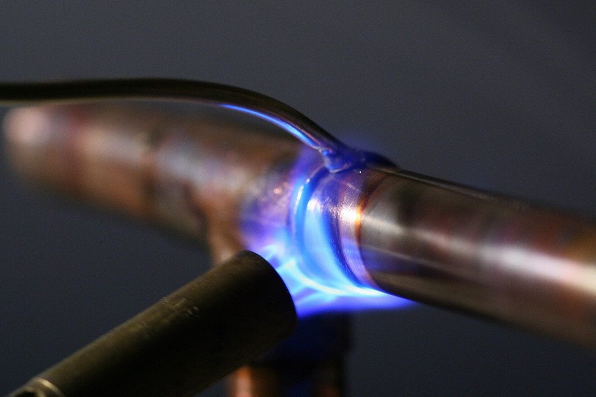
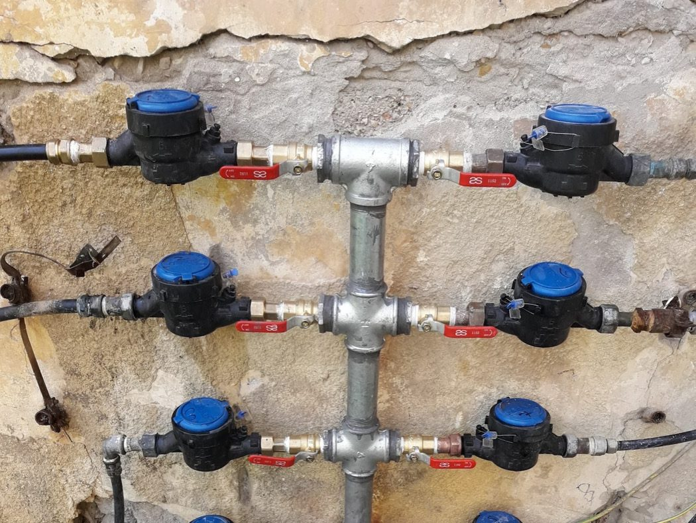
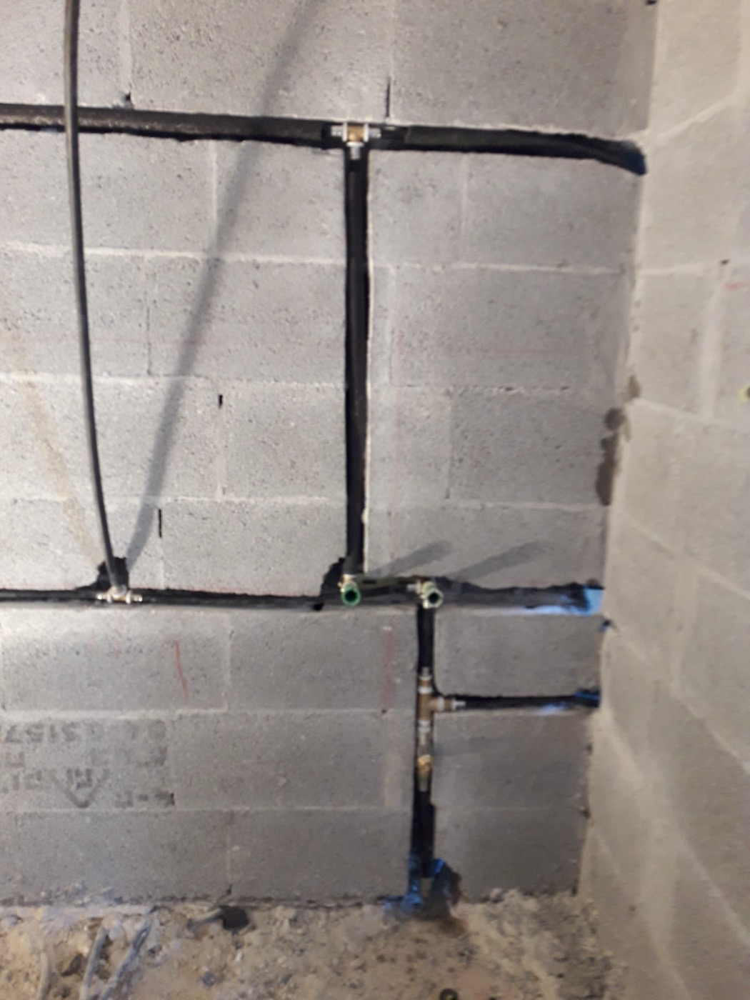
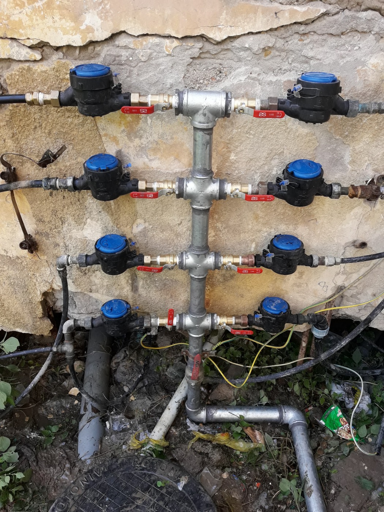

עכשיו יורדים בבניין: קומה אחרי קומה, לקוח אחרי לקוח.Now let's take the stairs down: floor by floor, customer by customer.
נזילה מהקומה של מעלה.A leak from the flat upstairs.
המצלמה עוקבת אחרי המים, שכבה אחרי שכבה. גללו, או לחצו על שלב.The camera follows the water, layer by layer. Scroll, or tap a stage.
0
מודל תלת-ממדי להמחשה3D model, for illustration




"אינסטלטור נדיר."“A rare plumber.”
ככה זה התחיל אצל יואב. ואז הוא הוסיף את מה שחוזר כמעט בכל ביקורת: קודם כל הבן אדם.That's how Yoav put it. Then he added what comes up in almost every review: the person first.
"דורון סלומון אינסטלטור נדיר! קודם כל בן אדם מדהים, עבודה מקצועית ביותר, אדיב מאוד ואמין!"
“Doron Salomon is a rare plumber! First of all an amazing person, highly professional work, very courteous and reliable!”

האסלה, הביוב, והמחיר.The toilet, the sewer, the price.
ביקורת אחת, שלושה דברים שאנשים באמת שואלים לפני שמזמינים אינסטלטור.One review, three things people actually ask before calling a plumber.
"דורון איש מקצועי ונעים, סידר לי את האסלה והחליף אותה, ודאג לכל בעיות הביוב בבית. והמחירים שלו מאוד סבירים ואפשריים לכיס."
“Doron is professional and pleasant. He sorted out my toilet, replaced it, and took care of every sewage problem in the house. And his prices are very reasonable and affordable.”

"האחד והיחיד!"
“The one and only!”
ועד הבית ממליץ.The house committee recommends.
לפני 10 שנים כתב עליו יעקב גולדברג, שגר בשתי דירות שונות והיה גם בוועד הבית. מאז ממשיכים לכתוב.10 years ago Jacques Goldberg, who lived in two different flats and sat on the house committee, wrote about him. People have kept writing since.
"הן כדייר מן השורה בשתי דירות שונות, והן כוועד בית, אני מבקש להעיד שדורון סלומון הוא איש מקצוע דגול, שקט, נאמן, אמין וישר, שאפשר לסמוך עליו לחלוטין."
“Both as an ordinary tenant in two different flats and as the house committee, I can attest that Doron Salomon is an outstanding professional: quiet, loyal, reliable and honest, someone you can trust completely.”
"אם אתם צריכים איש מקצוע בתחום האינסטלציה, אז דורון הוא האיש שלכם. רציני, אמין, ישר, מקצועי ואכפתי."
“If you need a plumber, Doron is your man. Serious, reliable, honest, professional and caring.”
באינטרקום של דורון.At Doron's intercom.
לחצו מה קרה ומתי. ההודעה נכתבת על המסך, והכפתור הירוק שולח אותה לדורון בוואטסאפ.Press what happened and when. The message appears on the screen, and the green button sends it to Doron on WhatsApp.
לוח דייריםBuilding directory
- דירוג בגוגלGoogle rating4.8
- ביקורות בגוגלGoogle reviews12
- ממליצים עליוRecommended for10 שנים10 years
- ראשוןSunday8:00–18:00
- שניMonday8:00–18:00
- שלישיTuesday8:00–18:00
- רביעיWednesday8:00–18:00
- חמישיThursday8:00–18:00
- שישיFriday8:00–14:00
- שבתSaturdayסגורClosed